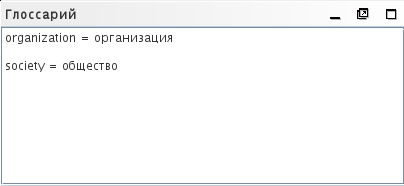
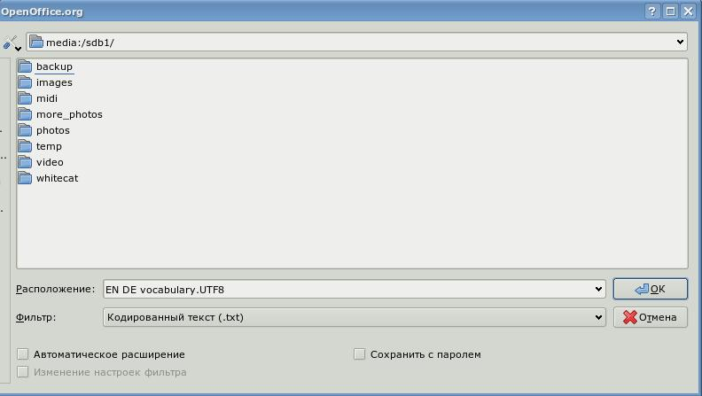
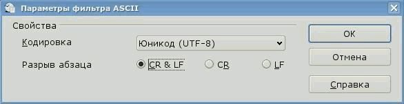

Глоссарии
Глоссарии - это файлы, которые создаются и обновляются вручную для использования в OmegaT.
Если в проекте OmegaT есть один или более глоссариев, то любой термин глоссария, который найден в активном сегменте, будет автоматически показан в окне Просмотр глоссария.
Использование
Чтобы использовать существующий глоссарий, просто поместите его в каталог /glossary после создания проекта. OmegaT автоматически определяет файлы глоссариев в этом каталоге при открытии проекта. Термины в активном сегменте, которые OmegaT нашла в файле или файлах глоссария, показываются на панели глоссария:

Слово перед знаком "=" - это слово на языке оригинала, его перевод находится после "=". К словарной статье можно добавить примечание (см. "transitive verb" для второго слова). Функция глоссария ищет только точные совпадения со статьёй глоссария (например, не учитывает склонение слова и т.п.). Новые термины можно вручную внести в файл(ы) глоссария во время перевода (например, в текстовом редакторе), но вновь добавленные термины будут распознаваться только после перезагрузки проекта.
Формат файла
Файлы глоссария — это текстовые файлы, содержащие списки из трёх столбцов, разделённых табуляторами, где в первом столбце находятся исходные термины, а во втором — их переводы. Третий столбец можно использовать для дополнительной информации (примечаний). Файлы глоссария могут быть как в системной кодировке (с расширением .tab), так и в UTF-8 (с расширением .utf8. По очевидным причинам, предпочтительной является кодировка Unicode (UTF8).
Как создавать глоссарии
Метод, приведённый ниже, вполне эффективен, если вы точно следуете этим рекомендациям. Вам понадобится OpenOffice.org Writer, поэтому, если вы этого ещё не сделали, скачайте и установите его. Запустите OpenOffice.org и откройте новый текстовый документ или запустите OpenOffice.org Writer.
В пустом документе вводите ваши словарные термины следующим образом: термин на языке оригинала, табуляция, термин на языке перевода, табуляция, примечание или объяснение термина, Enter. Табуляция осуществляется нажатием клавиши Tab в левой части клавиатуры. Если вы не хотите добавлять примечания, то можете пропустить вторую табуляцию. "Термин" может быть как одним словом, так и словосочетанием. В следующей строке введите второй термин и его перевод таким же образом. На третьей строке - третью терминологическую пару, и так далее.
После окончания ввода терминов, у вас будет две "колонки" - термины на языке оригинала слева и термины на языке перевода справа (и, возможно, ещё третья колонка с примечаниями и объяснениями). Вы можете сделать табуляцию (→ в примере ниже) и Enter (¶ ) видимыми, щёлкнув на значке ¶ в стандартной панели Writer. Вот несколько строк англо-немецкого глоссария
word →Wort→das (-/e/s, Wörter/-e)¶
small house→Häuschen→das,
(pl Häuschen)¶
dog →Hund→m, f Hündin ¶
horse→Pferd→n, m Hengst f Stute n Fohlen¶
Не используйте для создания глоссария функцию "колонки", которая имеется в OpenOfice.org! Просто разделяйте каждую терминологическую пару одной табуляцией.
Когда вы завершите ввод словарных стаей, выберите Файл > Сохранить Как. В поле "Расположение" введите имя для файла с вашим глоссарием, а затем расширение ".utf8" (например, "MyGlossary.utf8"). В поле "Фильтр" выберите "Кодированный текст (.txt.)". Уберите галочку "Автоматическое расширение" и поставьте галочку "Изменение настроек фильтра":

Нажмите OK. Появится диалоговое окно с двумя вариантами: "Да" и "Нет". Выберите "Да", чтобы сохранить в формате кодированного текста.
В окне настроек фильтра ASCII (см. ниже) выберите "Unicode (UTF-8)" в качестве набора символов:

Нажмите OK.
После создания проекта OmegaT, скопируйте или переместите этот файл в подкаталог \glossary этого проекта. Если проект уже открыт, перезагрузите его после копирования файла. Вы можете изменять файл глоссария, даже если он используется в проекте, но изменения не станут видны, пока вы не перезагрузите проект.
Если вы откроете сегмент, содержащий термин на языке оригинала, в панели глоссария будут показаны словарные статьи для тех слов текущего сегмента, которые можно найти в глоссарии (или глоссариях - их может быть больше одного). Использование Trados Multiterm
Глоссарии, созданные приложением Multiterm из пакета Trados с помощью функции экспорта текста, можно использовать в качестве глоссариев для OmegaT без дополнительных изменений, если им дать расширение имени файла .tab, при этом исходные термины и переводы должны быть в первых двух полях соответственно. Если вы экспортировали глоссарий, используя функцию "Экспорт текста, разделённого табуляцией", то вам придётся удалить первые 5 столбцов (Seq. Nr, Date created и так далее) перед собственно терминами.
Частые вопросы по глоссариям
- Проблема: термины глоссария не показываются.
- Возможные причины:
- в каталоге "glossary" нет файлов глоссария
- файл глоссария пуст
- термины не разделены табуляцией
- у файла глоссария некорректное расширение (не .tab и не .utf8)
- Нет ТОЧНОГО совпадения между словарной статьёй и текстом вашего документа - например, слово употреблено во множественном числе.
- у файла глоссария некорректная кодировка
- в активном сегменте нет терминов, которые совпадают с терминами в глоссарии
- проект не перезагрузили после решения вышеупомянутых проблем.
- Проблема: некоторые символы неправильно отображаются на панели глоссария (но те же символы корректно отображаются в панели редактирования).
- Возможные причины:
- расширение и кодировка файла не совпадают.